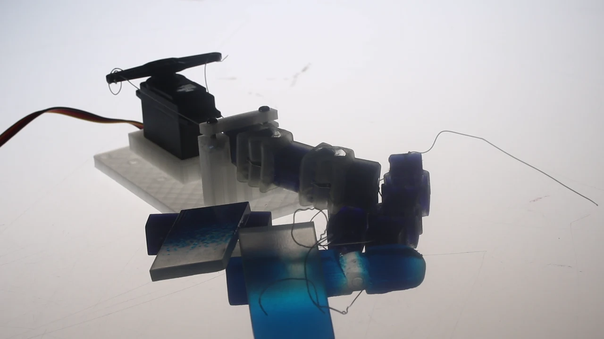
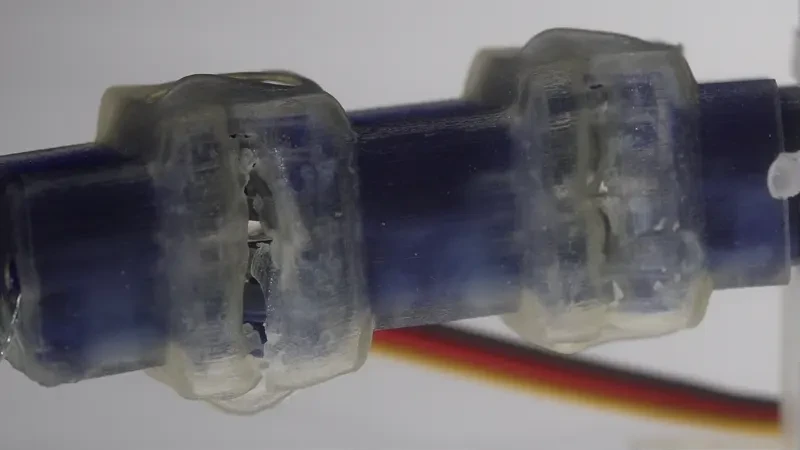

Printed robotics
Exploring how AI and multi-material printing can reduce assembly while preserving movement and form.


01 / The research
A different way
of making machines.
My master’s research asks how AI can help someone move from an idea to a functional robotic component. A printed finger is the test case: small enough to iterate, complex enough to expose the problems.
The physical goal is to print connected mechanisms with their hard and soft regions already in place, while retaining useful movement and a considered appearance.
Structure.
Rigid Vero materials form the segments that carry load, maintain geometry and guide the mechanism.
Movement.
Flexible Agilus material provides compliant connections and soft regions within the same print.
02 / Try the prototype
Move through
a real bend.
Drag across the image or use the slider to move through recorded footage from a bench test. The frames show an actual printed prototype as it bends.
Explore the latest thumb, index and wrist motion study

Real prototype. Recorded movement. Drag the image or use the slider to explore it.
03 / The current setup
Printed together.
Tested on the bench.
The rigid and flexible regions are printed together on a Stratasys J850. These prototypes are tendon driven: the tendons are installed after printing and an external servo provides the movement.
That setup lets me test the printed mechanism while developing the broader goal of reducing assembly. The footage shows the test rig and earlier prototypes alongside the moving finger.
The complete test setup
Recorded prototype footage. The clip has been trimmed and its audio removed.
04 / What the tests reveal
A working motion
is the beginning.
The prototypes have exposed practical tradeoffs: tendon friction, resistance from the soft material, tearing around joints and limited force at the fingertip. Each result changes what I test next.
I’m interested in how function and appearance develop together. The mechanism, the skin and the material transitions all affect the outcome.
05 / Latest motion study
A hand that follows.
The latest V14R3 study brings the revised thumb and index together with a proposed two-axis wrist. Move a 12 mm box, compare wrist-assisted and wrist-locked motion, or explore the finger inputs manually.
It uses the actual hand CAD to check pad placement. Holding force, slipping, tendon behaviour and soft-material deformation still need physical testing. The wrist is a motion concept, not a finished printable mechanism.
Open the interactive study06 / Where it leads
From physical results
to the next design.
The longer-term goal is to feed measurements from physical tests back into AI-assisted redesign. That means building a workflow that can learn from a real object, then use that evidence to make the next version better.
This is ongoing research, developed through printing, testing and revision at Victoria University of Wellington.
Talk about the researchNext project